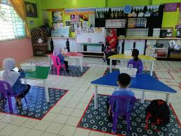
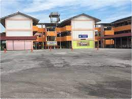
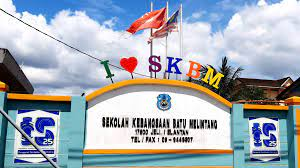
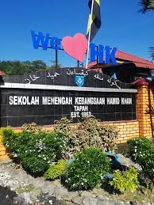
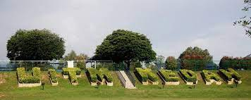

Kindergarten

At first, I started my studies at Tadika Kemas Kampung Kinjang. Then, because the family moved, I continued my studies at Tadika Kemas Tapah.
While in kindergarten, I was taught by my teachers with various subjects.
Among them, learn to read, learn to calculate and learn religious knowledge.
Primary School

During primary school, I attended two schools, namely Sekolah Kebangsaan Bidor 2 in Bidor and Sekolah Kebangsaan Batu Melintang in Tapah.
At Sekolah Kebangsaan Bidor 2, I continued learning until I was 11 years old where I was Grade 5 that year.
Because I followed my family to move, I transferred to Sekolah Kebangsaan Batu Melintang when I was in my final year of primary school which was Grade 6.
There, I took the UPSR test and got excellent results.
High School

Entering the realm of secondary school, I have been studying at Sekolah Menengah Kebangsaan Hamid Khan.
Successfully completed school up to the final year i.e. up to Form 5 in 2017.
Succeeded in getting excellent results during Form 3, which is the PT3 exam in 2015.
Successfully obtained excellent results in the SPM examination in 2017.
University

In the beginning, I was a graduate from Kolej Tingkatan Enam Tapah.
However, I quit Kolej Tingkatan Enam Tapah when I had 2 months left to finish my studies there on certain grounds.
After a year of waiting, I was finally able to continue my studies at Universiti Teknologi MARA Merbok, Kedah.
Now, I am one of the graduates at UiTM Kedah and I am a final year student here.